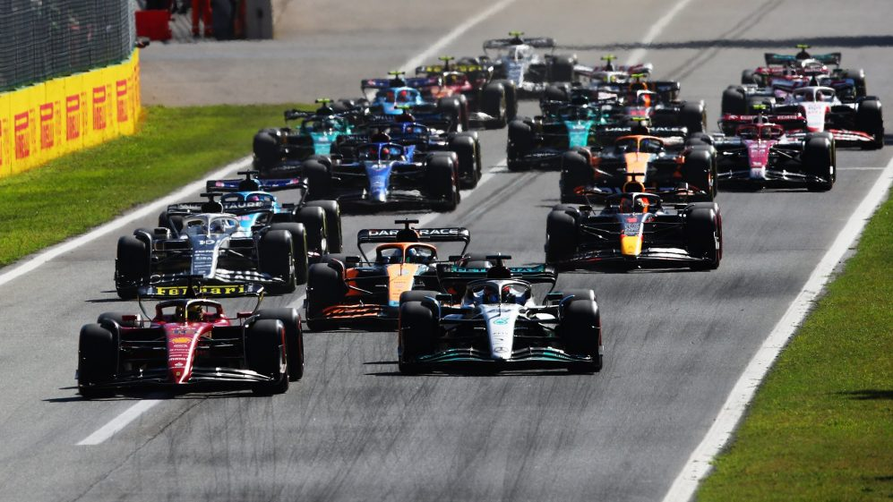
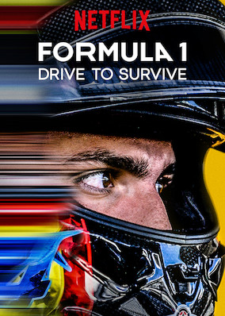
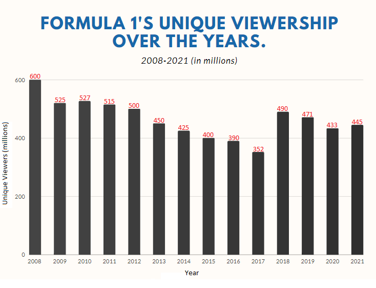

Formula 1 Has Been Racing Since 1950, Why are we Just Learning About It?
____________________________________________________
By Matt Leviss
Formula One, the pinnacle of motor racing across the globe, is set to have three Grand Prix in the United States next season. However, for most of its history, the sport has been overshadowed by NASCAR and American IndyCar. Where has this surge in popularity come from, and what has finally brought F1 to the United States?
Formula One has competed in the US for decades across several circuits. Unfortunately, a lack of revenue and interest in the races led to the series abandoning several events and attempts.
2017, Liberty Media bought the Formula One racing series and its televisiom.  The American-based media conglomerate is also in the ownership group of the Atlanta Braves baseball team.
Liberty Media had a main mission in mind, capture the American audience. According to the New York Times, “Carey [Exective Chairman of Formula One] told investors… that he planned to build the sport’s fan base by ‘telling the Formula One story’ and expanding its digital presence, something the series has struggled with as it seeks a younger audience.”
One year after, Formula One signed an agreement with the major American sports network ESPN, to broadcast races, qualifying and even practices across the country. This made the series more accessible as well as viewable with other sports.
The most powerful move Liberty Media made came the following year when they partnered with Netflix. Together, they produced Formula 1: Drive to Survive, a reality docu-series following along with the drivers and teams, behind the scenes, through the season. The show was an immediate success in viewership, attendance, and fandom.
According to Formula One, “...Season 4 of Drive to Survive became the most-watched Netflix series in 33 countries, including the United States, and more than a  Click this photo third of the spectators in Austin [US Grand Prix] last year mentioned Drive to Survive in an on-site survey about why they decided to attend.”
Race viewership has continued to rise since the creation of the show. ESPN reported that “Through [the first] five races, the 2022 F1 season is averaging 1.4 million viewers per race, up 49 percent over the 2021 season average (949,000 viewers) and up 131 percent over the 2020 season average (609,000 viewers).”
In 2012, the United State Grand Prix had slightly over one million viewers. A decade later, the 2022 Miami Grand Prix had 2.6 million American viewers. This chart from the Washingston Post shows the drastic spik in viewership following Liberty Media's purchase.
The sport has come under its fair share of criticism for its US based focus. Some were impressed with the  American pragentry that was brought to the inaugural Miami Grand Prix. Others were somewhat put off.
Bruce Schoenfeld of the New York Times wrote, “The inaugural Miami Grand Prix felt less like a sports event than a high-end theme park. There was a fake beach and sunbathing areas where spectators brandishing margaritas seemed only vaguely aware that cars were hurtling at insane speeds around them.”
Criticism aside, the sport is in its most successful and stable period in history. New interest from the Volkwagon group come to show the professional development the sport has gone through.
Liberty Media paid over $400 million for a car racing series on the decline with the intention of taking it to the one place it could never reach. In just the last 7 years, Formula One has exponentially grown in popularity and continues to gain a fanbase with every new season of Drive to Survive.